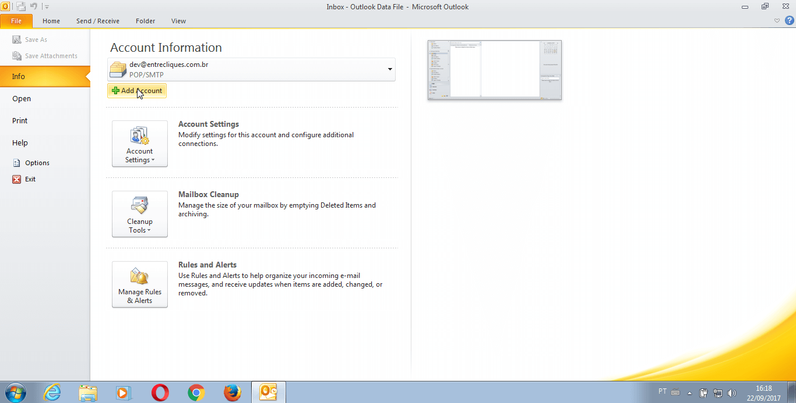
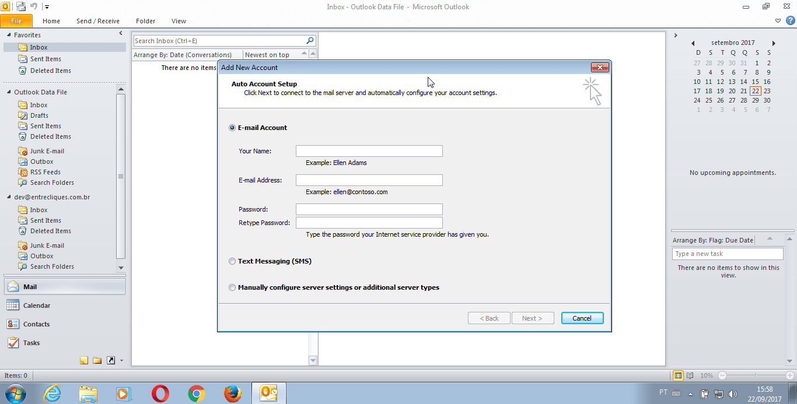

Configurando o #Q e-mail no Microsoft Outlook
#1 passo

Abra o Outlook e acesse o menu "Arquivo" no canto superior esquedo da janela
#2 passo

Com o menu aberto, clique no item "Adiconar Conta"
#3 passo

Nesta nova janela você deverá informar um nome que você deseja que seja exibido em suas mensagens enviadas, o se endereço de email, sua senha e uma confirmação que é a repetição da senha, nesta ordem. Depois de todos os dados preenchidos, clique em avançar.